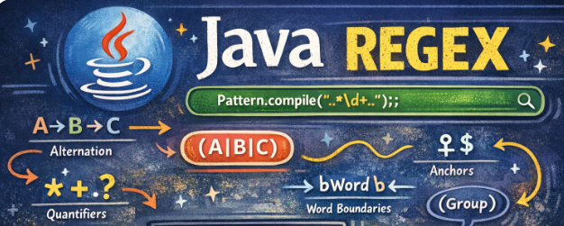

Expresiones Regulares¶

Una expresión regular (regex) define un patrón de búsqueda para cadenas. El patrón de búsqueda puede ser cualquier cosa, desde un carácter simple, una cadena fija o una expresión compleja que contenga caracteres especiales que describan el patrón.
Se puede usar una expresión regular para buscar, editar y manipular texto.
La expresión regular se aplica en el texto de izquierda a derecha.
Se usa ampliamente para definir la restricción en cadenas como contraseña y validación de correo electrónico.
Java Regex API proporciona 1 interfaz y 3 clases en el paquete java.util.regex:
- MatchResult interface
- Matcher class
- Pattern class
- PatternSyntaxException class
Clases de caracteres y límites de coincidencia¶
La forma más simple de una expresión regular (regex) es una cadena, un literal, un String. Por ejemplo, "Hola" es una regex que coincide (matches) con la palabra "Hola".
Si solo usáramos literales como patrón para buscar en un String, las regex no serían muy interesantes. Por eso, se crearon las Character classes & boundary matches.
Los boundary matches o límites de coincidencia son: ^ (al principio del String), $ (final del String), \b (principio y final palabra).
Una clase caracter es como un comodín y representa un conjunto o clase de caracteres.
| Regex | Descripción |
|---|---|
| . | Coincide con cualquier carácter. |
| ^pattern | El símbolo ^ indica al inicio del String. Encuentra la regex que coincide con el patrón dado al comienzo del String. Por ejemplo, /^start/ coincidirá con "start" solo si está al principio de una línea. |
| pattern$ | El símbolo $ indica el final del String. Encuentra la regex que coincide con el patrón dado al final del String. Por ejemplo, /end$/ coincidirá con "end" solo si está al final de una línea |
| [abc] | Los corchetes representan un conjunto. El String debe coincidir con la/s letra/s dentro del corchete. Por ejemplo, gr[ae]y coincidirá con "gray" y "grey" pero no con "groy". |
| [abc][12] | El String debe coincidir con las letras a, b ó c, seguidas de 1 ó 2. Por ejemplo, "a1", "b2" |
| [^abc] | El símbolo ^ dentro de los corchetes indica negación. El String debe coincidir con cualquier carácter excepto "a" ó "b" ó "c". Ejemplo cod[^abc] "cod3" y "codv" pero no "coda" o "codb" |
| [a-z1-9] | Rango. Busca coincidir las letras minúsculas de la a a la z (ambas incluidas) y los dígitos del 1 al 9 (ambos incluidos). Por ejemplo,cod[a-z1-9] "cod3", "code" pero no "codE" ni cod$ ni "coda2" |
| a|o | Encuentra en el String las ocurrencias de "a" ó "o". Por ejemplo, perro|gato "perro" y "gato" pero no "pez" |
| ab | Encuentra en el String todas las ocurrencias de 'a' seguido de una 'b'. Por ejemplo, "abuelo", |
Meta caracteres¶
Los siguientes metacaracteres tienen un significado predefinido y hacen que ciertos patrones comunes sean más fáciles de usar. Por ejemplo, puede usar \d como definición simplificada para [0..9].
| Regex | Descripción |
|---|---|
| \d | Cualquier dígito. Equivale a [0-9]. |
| \D | No dígito. Equivale a [^0-9]. |
| \s | Espacio en blanco. Equivale a [ \t\n\x0b\r\f] |
| \S | No espacio en blanco. Equivale a [^\s] |
| \w | Una letra mayúscula o minúscula, un dígito o el carácter '_'. Equivale a [a-zA-Z0-9_] |
| \W | Equivale a [^\w] |
| \S+ | Varios caracteres que no son espacios en blanco |
| \b | Límite de una palabra. Por ejemplo \b\d[a-z]\b. Coincide con "2a", "4c" pero no con "2c3" " |
Especificación de modos dentro de la expresión regular¶
Puede agregar los siguientes modificadores de modo al comienzo de la expresión regular. Para especificar múltiples modos, simplemente se juntan: (?ismx).
(?i)hace que la expresión regular sea insensible a mayúsculas y minúsculas. Ejemplo(?i)hola, coincide con "HoLa","hoLA", "HOLa"....(?s)para "modo de una sola línea" hace que el punto coincida con todos los caracteres, incluidos los saltos de línea. Por ejemplo, si deseas realizar una búsqueda en un texto que incluya múltiples líneas y deseas que el punto . coincida con cualquier carácter(?m)para "modo multilínea" hace que el símbolo de intercalación y el dólar coincidan al principio y al final de cada línea en la cadena de asunto.
Cuantificadores Regex¶
Los cuantificadores especifican el número de ocurrencias de un carácter.
Un cuantificador define con qué frecuencia puede ocurrir un elemento. Los símbolos ?, *, + y {} son calificadores.
| Regex | Descripción |
|---|---|
| * | Indica que ocurre 0 ó más veces. Equivale a {0,}. Por ejemplo, go*d coincidirá con "gd", "god", "good", "gooood", etc |
| + | Indica que ocurre 1 ó más veces. Equivale a {1,}. Por ejemplo, go+d coincidirá con "god", "good", "gooood", pero no con "gd" |
| ? | Indica que ocurre 0 ó 1 veces. Equivale a {0,1}. Por ejemplo, go?d coincidirá con "gd", "god" . Pero no con "good" |
| {X} | Indica que lo que va justo antes de las llaves {} se repite X número de veces. Por ejemplo A\d{3}B, "A231B", "A365B". Pero no coincide con "As23B" ó "A1234B" |
| {X, Y} | Indica que lo que va justo antes de las llaves {} se repite mínimo X número de veces y máximo Y. Por ejemplo \b\w{4,6}\b coincide "apple", "123456" pero no "abc", "1234567", "biblioteca" |
| *? | ? después de un cuantificador lo convierte en un cuantificador perezoso (lazy). Intenta encontrar la coincidencia más pequeña. Esto hace que la expresión regular se detenga en la primera coincidencia. |
En la documentación de Oracle podemos ver todas las clases de caracteres que hay para construir una expresión regular.
https://docs.oracle.com/javase/8/docs/api/java/util/regex/Pattern.html
Entrena tus Regex¶
https://www.freeformatter.com/java-regex-tester.html
Java Regex Core Classes¶
La API de expresiones regulares de Java consta de dos clases principales. Estos son:
Pattern (java.util.regex.Pattern)
Matcher (java.util.regex.Matcher)
Clase Pattern¶
La clase Pattern se utiliza para crear patrones (expresiones regulares). Un patrón es una expresión regular precompilada en forma de objeto (como una instancia de patrón), capaz de compararse con un texto.
String regex = ".*http://.*";
Pattern pattern = Pattern.compile(regex);
Clase Matcher¶
La clase Matcher se usa para hacer coincidir una expresión regular determinada (ùna instancia de Pattern) con un texto varias veces. En otras palabras, buscar múltiples ocurrencias de la expresión regular en el texto. Matcher nos dirá en qué parte del texto (índice de caracteres) encontró las ocurrencias. Puede obtener una instancia de Matcher a partir de una instancia de Pattern.
Implementa la interfaz MatchResult.
Algunos de los métodos de la clase Matcher son:
- boolean matches(): prueba si la expresión regular coincide con el patrón.
- booleano find(): encuentra la siguiente expresión que coincide con el patrón.
- boolean find(int start): encuentra la siguiente expresión que coincide con el patrón del número de inicio dado.
- String group(): devuelve la subsecuencia coincidente.
- int start(): devuelve el índice inicial de la subsecuencia coincidente.
- int end(): devuelve el índice final de la subsecuencia coincidente.
- int groupCount(): devuelve el número total de la subsecuencia coincidente.
Ejemplo:
Coincidencia de una cadena con la expresión regular
String regex = "ab+c";//'palabras que empicen por 'a' siga 1 o más 'b' y terminen por 'c'
String input = "abbc";
Pattern pattern = Pattern.compile(regex);
Matcher matcher = pattern.matcher(input);
boolean matches = matcher.matches(); // Devuelve true si toda la cadena coincide con la expresión regular
System.out.println(matches); // Imprime: true
String regex = "ab\\w*o";// palabras que empiecen por 'ab' y terminen e 'o'
String input = " hola que tal abuelo, donde vamos";
Pattern pattern = Pattern.compile(regex);
Matcher matcher = pattern.matcher(input);
// Devuelve true si encuentra al menos una ocurrencia de la expresión regular
boolean find = matcher.find();
System.out.println(find); // Imprime: true
String input2 = " hola que tal abuela, donde vamos";
Matcher matcher2 = pattern.matcher(input2);
find = matcher.find();
System.out.println(find); // Imprime: false
//palabras entre 4 y 6 letras. Fijate en \b que indica inicio y fin
String regex = "\\b\\w{4,6}\\b";
String input = "ver banana casa 1234567";
Pattern pattern = Pattern.compile(regex);
Matcher matcher = pattern.matcher(input);
while (matcher.find()) {
//extrae el elemento que coincide con el patrón
System.out.println(matcher.group());
// Imprime: banana casa
}
Encontrar las posiciones de la coincidencia
StringBuilder html = new StringBuilder("<h1>Head</h1>");
html.append("<h2>Etiqueta h2 de encabezado</h2>");
html.append("<p>Esto es un párrafo en html</p>");
html.append("<h2>Resumen</h2>");
html.append("<p>Fin del html</p>");
Pattern p = Pattern.compile("<h2>");
Matcher m = p.matcher(html);
//buscamos la posición de las coincidencias
while (m.find()) {
System.out.println("Coincidencia encontrada en la posición " + m.start());
}
/*Coincidencia encontrada en la posición 13
Coincidencia encontrada en la posición 80*/
String regex = "\\d";//números
String input = "abc123xyz";
Pattern pattern = Pattern.compile(regex);
Matcher matcher = pattern.matcher(input);
String replaced = matcher.replaceAll("*");
System.out.println(replaced); // Imprime: abc***xyz
Cuantificado codicioso .* y no codicioso .*?¶
Sabemos que:
* . → cualquier carácter
* * → 0 o más veces
Significa que donde aparezca .* se espera un número indeterminado de caracteres y coge el máximo posible de caracteres.
Ejemplo
String texto = "<a>uno</a><b>dos</b>";
Pattern p1 = Pattern.compile("<.*>");
Matcher m1 = p1.matcher(texto);
System.out.println("Codicioso: ");
while (m1.find()) {
System.out.println("Codicioso: " + m1.group());
}
//Codicioso:
// <a>uno</a><b>dos</b>
String texto = "Hola Ana Lopez Ana123 Maria Ana bAnana AnaMaria";
Pattern p = Pattern.compile("An+a.*");
Matcher m = p.matcher(texto);
while (m.find()) {
System.out.println("Encontrado: " + m.group());
}
//Codicioso:
//Ana Lopez Ana123 Maria Ana bAnana AnaMaria
.*? llamado no codicioso
Para el primer ejemplo:
String texto = "<a>uno</a><b>dos</b>";
Pattern p1 = Pattern.compile("<.*?>");
Matcher m1 = p1.matcher(texto);
System.out.print("No Codicioso: ");
while (m1.find()) {
System.out.print(" " + m1.group());
}
//No Codicioso: <a> </a> <b> </b>
String texto = "Hola Annnna Lopez Ana123 Maria Ana bAnana AnaMaria";
Pattern p = Pattern.compile("An+a.*?");
Matcher m = p.matcher(texto);
System.out.print("No codicioso");
while (m.find()) {
System.out.print(" " + m.group());
}
//No Codicioso:No codicioso Annnna Ana Ana Ana Ana
reset()¶
El método de la clase Matcher reset() restablece el estado de coincidencia internamente en el Matcher. En caso de que haya comenzado a hacer coincidir las ocurrencias en una cadena a través del método find(), el Matcher mantendrá internamente un estado sobre qué tan lejos ha buscado a través del texto de entrada. Al llamar a reset(), la coincidencia comenzará nuevamente desde el principio del texto.
String text = "La casa está en el lago y el gato está en la casa.";
// Patrón para encontrar palabras que contienen la letra 'a'
Pattern pattern = Pattern.compile("\\b\\w*a\\w*\\b");
Matcher matcher = pattern.matcher(text);
// Encontrar y reemplazar las letras 'a' con 'X'
int replacementCount = 0;
while (matcher.find()) {
String replacement = matcher.group().replace('a', 'X');
text = text.substring(0, matcher.start()) + replacement + text.substring(matcher.end());
replacementCount++;
}
System.out.println("Texto con 'a' reemplazado por 'X':");
System.out.println(text);
//LX cXsX está en el lXgo y el gXto está en lX cXsX.
// Reiniciar el objeto Matcher para usarlo nuevamente
matcher.reset();
// Encontrar la cantidad total de palabras que contienen 'a'
int count = 0;
while (matcher.find()) {
count++;
}
System.out.println("Total de palabras que contienen 'a': " + count);
//Total de palabras que contienen 'a': 6
group()¶
Los grupos están marcados con paréntesis en la expresión regular. Por ejemplo:
(Hola)
Esta expresión regular coincide con el texto Hola. Los paréntesis no son parte del texto que se compara. Los paréntesis marcan un grupo. Cuando se encuentra una coincidencia en un texto, puede obtener acceso a la parte de la expresión regular dentro del grupo.
Para acceder a un grupo se utiliza el método group(int groupNo). Una expresión regular puede tener más de un grupo. Por lo tanto, cada grupo está marcado con un conjunto separado de paréntesis. Para obtener acceso al texto que coincidió con la subparte de la expresión en un grupo específico, se pasa el número del grupo al método group(int groupNo).
El grupo con el número 0 es siempre la expresión regular completa. Para obtener acceso a un grupo marcado entre paréntesis, debe comenzar con los números de grupo 1.
Ejemplo:
String text = """
Name: Juan, Phone: 123456789
Name: Pepe, Phone: 345678989
""";
// Patrón para extraer el nombre y el teléfono
Pattern pattern = Pattern.compile("Name: (.*), Phone: (\\d+)");
Matcher matcher = pattern.matcher(text);
while (matcher.find()) {
String nombre = matcher.group(1); // Obtiene el grupo de captura 1 (el nombre)
String telefono = matcher.group(2); // Obtiene el grupo de captura 2 (el teléfono)
System.out.println("Nombre: " + nombre);
System.out.println("Teléfono: " + telefono);
/*
Nombre: Juan
Teléfono: 123456789
Nombre: Pepe
Teléfono: 345678989
*/
}
String.matches¶
El método matches() de String se utiliza para determinar si una cadena coincide con una expresión regular completa. Devuelve true si la cadena coincide completamente con la expresión regular y false en caso contrario
String texto = "Hola Mundo";
if (texto.matches("Hola.*")) {
System.out.println("La cadena comienza con 'Hola'");
} else {
System.out.println("La cadena no comienza con 'Hola'");
}
String.replaceAll¶
Permite sustituir en un String las coincidencias de una expresión regular
Sustituir el Dni por asteriscos
String emails = "Pepe con DNI 12345678F y María con DNI 87654321G";
// Expresión regular para coincidir con el DNI
String regex = "\\b\\d{8}[A-HJ-NP-TV-Z]\\b";
String reemplazo = "*********";
// Reemplazar los DNI
String dniOcultos = emails.replaceAll(regex, reemplazo);
System.out.println("Resultado:");
System.out.println(dniOcultos);
//Pepe con DNI ********* y María con DNI *********
Operadores lógicos¶
La API de Java Regex admite un conjunto de operadores lógicos que se pueden usar para combinar múltiples subpatrones dentro de una sola expresión regular.
Los operadores lógicos son: el operador and, el operador or y el operador not.
El operador and es implícito. Si dos caracteres (u otros subpatrones) se suceden en una expresión regular, eso significa que tanto el primer como el segundo subpatrón coinciden en gran medida con la cadena de destino.
El operador or es explícito y está representado por el carácter vertical |.
El operador not es explícito, está representado por el símbolo !, brinda la posibilidad de excluir un patrón. Con esto se puede decir que una cadena no debe ir seguida de otra cadena.
En expresión regular, hay anticipación positiva (? =) y anticipación negativa (?!):
(?=)garantiza que algo siga a algo más.b(?=c)coincide con una b seguida de una c
Por ejemplo, si queremos encontrar palabras que contengan "apple" seguidas de "pie"
String text = "apple juice, apple pie, apple juice, apple cake, apple pie";
Pattern pattern = Pattern.compile("\\bapple(?=\\spie)\\b");
Matcher matcher = pattern.matcher(text);
while (matcher.find()) {
System.out.println(matcher.start());
}
//13 49
(?!) garantiza que algo NO sea seguido por otra cosa. b(?!c) coincide con una b que NO va seguida de una c
Por ejemplo, si queremos encontrar palabras que contengan "apple" no seguidas de "pie"
String text = "apple juice, apple pie, apple juice, apple cake, apple pie";
Pattern pattern = Pattern.compile("\\bapple(?=\\spie)\\b");
Matcher matcher = pattern.matcher(text);
while (matcher.find()) {
System.out.println(matcher.start());
}
//0 24 37
Ejemplos expresión regular¶
teléfono móvil de España
//(+34) 655-555-555
String regexTelefono = "^([\\(]{1}[\\+]{1}34[\\)]{1}[ ]{1}[0-9]{3}[\\-]{1}[0-9]{3}[\\-]{1}[0-9]{3})$";
String t1 = "123456789";//no
String t2 = "(+35) 123456-789";//no
String t3 = "(+34) 123-456-789";//si
String t4 = "(+34)123-456-78";//no
System.out.println(t1.matches(regexTelefono));//false
System.out.println(t2.matches(regexTelefono));//false
System.out.println(t3.matches(regexTelefono));//true
System.out.println(t4.matches(regexTelefono));//false
Buscar un patrón numérico en una cadena
String texto = "El precio es $50.00";
Pattern pattern = Pattern.compile("\\$\\d+\\.\\d{2}");
Matcher matcher = pattern.matcher(texto);
if (matcher.find()) {
System.out.println("Precio encontrado: " + matcher.group());
}
String email = "usuario@example.com";
Pattern pattern = Pattern.compile("[a-zA-Z0-9._%+-]+@[a-zA-Z0-9.-]+\\.[a-zA-Z]{2,}");
Matcher matcher = pattern.matcher(email);
if (matcher.matches()) {
System.out.println("La dirección de correo electrónico es válida.");
}
String texto = "La lluvia en Sevilla es una maravilla. Sevilla tiene un color especial.";
Pattern pattern = Pattern.compile("\\bSevilla\\b");
Matcher matcher = pattern.matcher(texto);
int contador = 0;
while (matcher.find()) {
contador++;
}
System.out.println("La palabra 'Sevilla' aparece " + contador + " veces.");
String texto = "La temperatura es (25°C) y la humedad es (50%)";
Pattern pattern = Pattern.compile("\\((.*?)\\)");
Matcher matcher = pattern.matcher(texto);
while (matcher.find()) {
System.out.println("Contenido entre paréntesis: " + matcher.group(1));
}
//
/*
Contenido entre paréntesis: 25°C
Contenido entre paréntesis: 50%
.*? significa el mínimo posible, si pusieramos (.*) habría capturado
25°C) y la humedad es (50% como un solo grupo
*/
String texto = "La casa es pequeña, pero la casa es acogedora.";
Pattern pattern = Pattern.compile("\\bcasa\\b");
Matcher matcher = pattern.matcher(texto);
String resultado = matcher.replaceAll("vivienda");
System.out.println(resultado);
//La vivienda es pequeña, pero la vivienda es acogedora.
String fecha = "12/31/2023";
Pattern pattern = Pattern.compile("(0[1-9]|1[0-2])/([0-2][0-9]|3[0-1])/\\d{4}");
Matcher matcher = pattern.matcher(fecha);
if (matcher.matches()) {
System.out.println("La fecha es válida.");
}
String emails = "usuario1@example.com, usuario2@example.com, usuario3@example.com";
Pattern pattern = Pattern.compile("\\b([a-zA-Z0-9._%+-]+)@");
Matcher matcher = pattern.matcher(emails);
while (matcher.find()) {
System.out.println("Nombre de usuario: " + matcher.group(1));
}
/*
Nombre de usuario: usuario1
Nombre de usuario: usuario2
Nombre de usuario: usuario3
*/